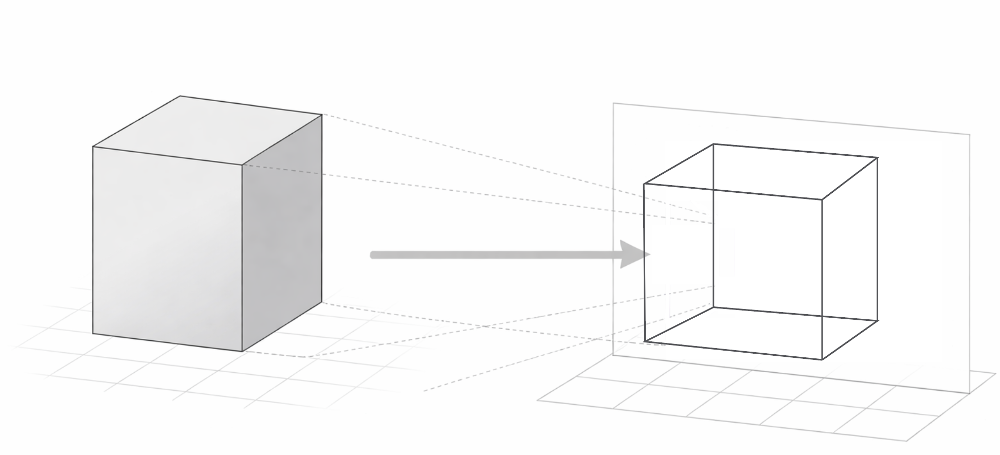
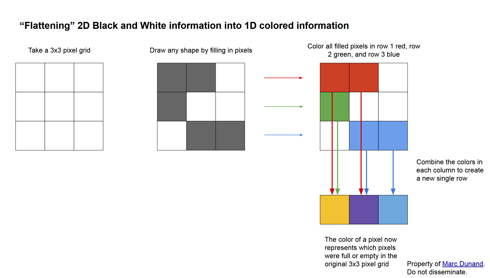
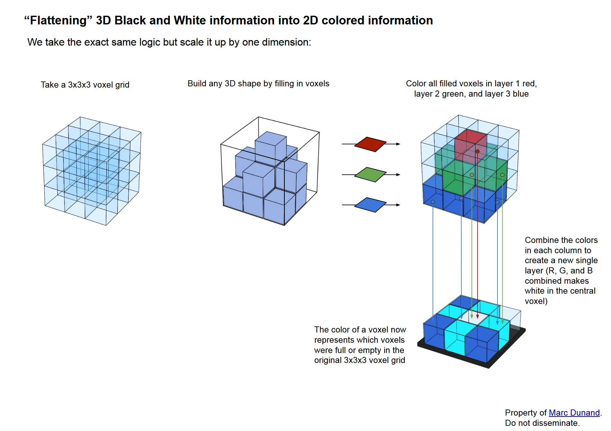
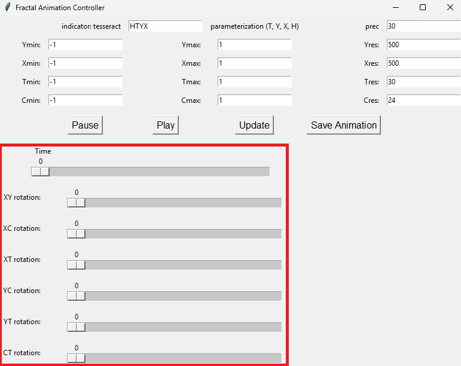

This page compares different ways of visualizing a given 4D object.
Tesseracts are the 4D-equivalent of cubes. These visualizations all represent a tesseract with edges in x, y, z, and w of length 1.
XYZ
4D structure projected into 3D space
How to interpret visualization
This visualization technique projects our 4D shape into 3D. We see 3D shapes projected into 2D all the time.
.

Controls
Click and drag on the visualization to rotate in 3D. Use ax, ay, and az to rotate in the WX, WY, and WZ planes respectively.
Open in new tab
XYZ+Slider
3D slice visualizer with a slider to slice through fourth dimension
How to interpret visualization
Controls
Click and drag on the visualization to rotate in 3D. Drag w-axis slice to move 3D slice through 4D object. Use wx, wy, and wz to rotate in the WX, WY, and WZ planes respectively.
Open in new tab
XY+Color+Time (XYCT)
Two dimensions parameterized in space, with a third dimension represented in color, and a slider to slice through the fourth dimension.
Run in command line:
python XYCT.py --shape tesseract
How to interpret visualization
Similar to XYZ+slider, XY+Color+Time is composed of a series of 3D slices which you move through using a slider.
However, where XYZ+slider has each slice composed of a 3D shape made of three spacial dimensions (XYZ),
XYCT has each slice composed of a 3D shape made of two spacial dimensions (XY) and one color dimension (C).
What does it mean for color to be a dimension? At a high level, we are creating a color code, where different colors
correspond to different structures. Look at the table below to see how 2D (XY) structures can be represented
perfectly in 1D+color (XC).

This is the full logic of how a spatial dimension can be translated into a color dimension. Using the exact same method,
we can represent 3D (XYZ) structures as 2D+color (XYC).

This is how each frame of XYCT is constructed, just with 24 different colored layers, rather than just the 3 RGB layers. Each frame of XYCT contains 3D information that has been translated from XYZ -> XYC.
Then, just like in XYZ+slider, as we move our slider over time, we can see all the 3D slices of the 4D object, giving us XY+color+time,
or XYCT
Controls
Only focus on the seven controls highlighted here:

The first control, Time, works just like the slider in the XYZ+slider example: the slider slices through the 4th dimension of the shape.
The remaining six controls correspond to the six possible planes of rotation that exist in 4D space.
For example, the XY slider spins the visualization along the plane created by the X-dimension and the Y-dimension,
so rotating in XY by 90 degrees swaps the dimensions represented horizontally on the screen (X) and vertically on the screen (Y).
As another example, the YT slider spins the visualization along the plane created by the Y-dimension and the dimension parameterized in time,
so rotating in YT by 90 degrees swaps the dimensions represented vertically on the screen (Y) and represented by slicing across time (T).